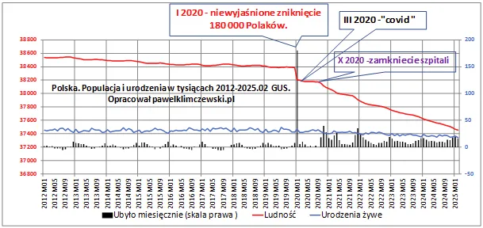
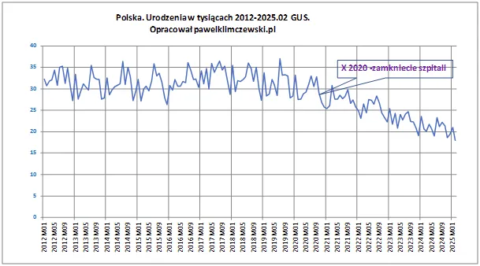

Toruń w Kosmosie
Porywają nas kosmici, niech tym się zajmie policja.
Nie jest bezpieczne przeszukiwanie raportów GUS-u. W okolicach "plandemi" część obowiązków GUS-u przejmowało Ministerstwo Cyfryzacji i nie do końca było wiadomo, kto nadzoruje rejestry ludności. Za tym kryją się jeszcze Urzędy Stanu Cywilnego, gdzie notowane są zgony, urodziny, śluby, rozwody itp.
To, co zobaczyłem dziś to jest pełen odjazd, w raporcie GUS "Stan i ruch naturalny ludności do lutego 2025", ściągnięte z serwera 2025/07/19, w styczniu 2020 brakuje 180 000 osób w stosunku do grudnia 2019, czyli około tyle, co ma miasto Toruń.

Zwykle pracowałem na danych tygodniowych i mimo bardzo drobiazgowych analizie nie natrafiłem na ten dziwny "odlot" 180 tysięcy naszych rodaków. Nie będę snuł domysłów co tam się stało, może to nie kosmici?

Na drugim wykresie wyciągnąłem osobno same urodzenia, żeby było wyraźnie widać skąd bierze się błyskawiczne kurczenie naszego narodu. Nie nadmierne zgony a brak urodzeń jest główną przyczyną spadku liczby Polaków. Nadmiarowe zgony były tego przyczyną tylko w okresie od października 2020, kiedy to zamknięto szpitale przez chorymi ludźmi z nowotworami, zawałami, udarami mózgu, itp. Ten wykres oczywiście po raz setny pokazuje, że wiosną 2020 nie było żadnej fali zgonów wirusowych, ale dowody, że potem też takich fal nie było są w raporcie tu : https://pawelklimczewski.pl/2022/02/09/nie-bylo-fali-pierwszej-nie-bylo-drugiej-nie-bylo-zadnej-fali/
P.s. Mając takie dane zagregowane rocznie spece z Gwiazdy Śmierci, pokazują ile to zginęło osób w 2020 w stosunku do 2019. Majstersztyk ojca kłamstwa, a lud drży w trwodze.
Paweł Klimczewski